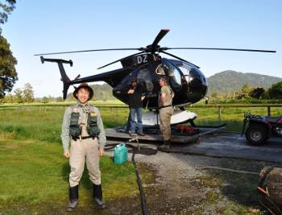
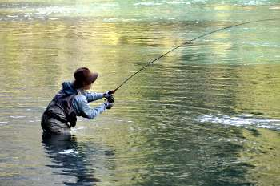
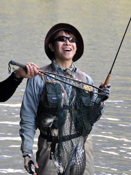
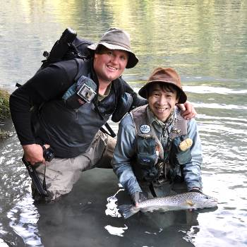

釣行日誌 ＮＺ編 「翡翠、黄金、そして銀塊」
翡翠色した氷河の川へ
2010/11/23(TUE)-1
１１月２３日の朝は６時に起きた。６時半にディーンが迎えに来るので、急いで朝食とする。メニューはシリアルとフルーツである。時間となり、約束通りディーンが現れる。鼻息も荒くトヨタ・ハイラックスの荷台に釣り道具一式を載せ、三人で走り出す。鰐部さんは後部座席にまわってくれて、僕は座り心地の良い助手席となった。ホキティカの町を抜け、ホキティカ川の橋を渡り、車はステートハイウェイ６号線をひたすら南下してゆく。交通量は少ないが、２車線対面通行の道路を時速120kmで走るのは、いかに運転の上手いディーンのドライブでもなかなか怖いものがある。
フランツ・ジョセフ氷河とフォックス氷河を通り過ぎ、まだまだハイラックスは南下を続ける。２時間半ほども走ったあたりでディーンは車の速度を落としてとある農道に車を乗り入れた。聞けばこの先がヘリコプターパイロットのジェームズ・スコット氏の家だということで、そんな話をしているうちに茶色のヘリが目に入った。車を停め、三人でスコット氏に挨拶をした後、すぐさま釣りの支度を始める。ウェーダーとウェーディングシューズを履くと、心の底から歓喜の声が聞こえてくる。二日をかけてはるばるウェストランドまでやってきて、これからいよいよ釣りが始まるのだ。

ヘリには胴体下にどうやらハンドメイドらしい白い荷物室が取り付けられており、その中へディーンがデイパックやロッドを運び込んでくれ、僕たちは前部座席に乗り込む。エンジンがかかり、ヘッドフォンを付け、ディーンが後部座席に乗り込み、エンジンの回転数が上がったかと思うとふわりとヘリが宙に浮かんだ。そのままスムーズに上昇しながら南へ反転し、ヘリは一路、白い雲がかかった高い峰を目指す。
眼下には深い緑色をしたウェストランドの原生林が広がり、遠くには残雪を頂いた峰々がそびえる。見る間にその中の一つの峰に近づいたヘリは、残雪や岩をかすめるようにして飛び越え、氷河から流れ出る一本の川に近づいてゆく。川の色は青みがかって翡翠色をしている。ヘリは着陸地点に近づくと、ゆっくりと旋回しながら高度を下げ、右岸側の砂地へと降りていった。わずかなショックで着地したことが分かり、先に降りたディーンがドアを開けてくれる。帽子を飛ばされないように手で押さえながらステップを踏みしめて砂利の河原へ降り立つ。すぐにディーンが荷物を出してくれたので、デイパックとロッドを持って森の端まで駆け足で退避する。鰐部さんも降りて荷物を受け取り、三人が退避するとヘリは素早く離陸し、旋回しつつ飛んできた方向へと飛び去った。あとには川のせせらぎと静寂が残るのみとなった。
さて、ヘリフィッシングの始まりである。ここで白状しておかなければならないのだが、私こと伊藤は、97年、98年に行った二回のヘリフィッシングで、いずれもボウズ敗退を食らっているのである。まぁ様々な事情はあるにせよ、ボウズはボウズであり、悔しい想い出と、またしてもボウズを食らうのではないかという一抹の不安が心をよぎる。なんにせよ、ここまできたら戦闘開始である。
鱒の姿を見つけるべく鵜の目鷹の目で水面を凝視してゆくディーンを先頭に、鰐部さん、僕の順で遡行が始まった。しばらく右岸側を歩いて、長い淵が続いているポイントに来た。岸沿いの崖の上から見ていたディーンが、鱒を見つけたらしく、僕たち二人のうち、どちらが釣るか決めろと言う。そこで僕たちはジャンケンをした。鰐部さんが勝って、先行は鰐部克也さん、通称「カツ」がキャストの準備を始める。フライはロイヤルウルフ。初夏のドライフライの釣りである。
さぁていよいよお手並み拝見となる。カツとは長い付き合いだが、これまで一緒に釣りをしたことは無い。10年越しの夢がかない、今こうしてウェストランドを二人で釣ることになった。キャストを見る限り、カツの技量のほどは、彼のホームページの写真に出てくる数々の大物ブラウンの姿で証明されている通りのようだった。数回のフォルスキャストのあとで、見事なプレゼンテーションが決まり、水面にフライが落ちる。しかし、目標との距離が若干あったらしく、崖の上のディーンから指示が飛ぶ。仕事柄、英語も堪能なカツは、すぐさま修正し、次のキャストに挑む。今度はどんぴしゃり。後ろから見ていたので、鱒がロイヤルウルフを咥えた瞬間は見逃したが、「ストライク！」というディーンの声と共にすかさずカツが合わせて、見事最初の１尾を掛けた。鱒はそうとう大きいようで、ぐいぐいとロッドを引き絞る。

カツがファイトしている間にディーンが崖を降りてきて、ランディングネットをバックパックから取り外してランディングの体勢に入った。カツの後ろにそっと立ち、やりとりのアドバイスをつぶやく。カツはロッドのグリップを左手で持ち、右手はグリップの少し上で強引に引かれるロッドを支えている。幾度となく疾走を繰り返した鱒も、とうとうランディングネットの近くまで寄ってきた。見事な手さばきでディーンが鱒をすくい上げ、カツとディーンがしっかりと抱き合って喜びを分かち合う。次の瞬間、カツが安堵の微笑みを浮かべて空を仰ぐ。この満足そうな笑みの中に、とうとう念願を叶えたカツの思いが込められているようだった。

取り込んだ鱒の姿を見せてもらいに近づくと、ネットの中に横たわった鱒は、一般的にウェストランドのブラウンに見られるような黄金色ではなく、翡翠色をした川の流れに馴染んでカモフラージュするように、銀白色の輝きを放っていた。ディーンがそっと鱒の身体を支えて、カツとともに記念撮影を行った。至福の瞬間である。

これら一連の写真は、今回の旅行のために鰐部さんが父上からお借りしたデジタル一眼レフカメラで写したものであり、さすがに鮮明に撮れていて感心した。さぁ、次は僕の番である！
釣行日誌ＮＺ編 目次へ
サイトマップ
ホームへ
お問い合わせ